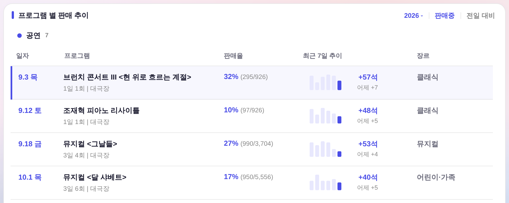
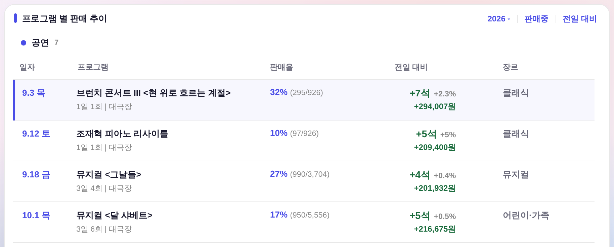

운영자 260807 「어제 대비해서가 너무 눈에 안 띈다 · 판매중 구분자 우측에 동일한 마진간격으로 전일 대비 하나 · 오로지 전일하고 비교만 · +00% +000원 등」
화면 = 대시보드 우 열 「프로그램 별 판매 추이」 · 데이터 = QA 목(?qa=admin · 실데이터·PII 미접촉)
2026 ▾판매중 · 4열 = 최근 7일 막대 + 7일 누계, 어제분은 그 아래 11px 회색 한 줄(「어제 +7」)

2026 ▾판매중전일 대비 · 같은 4열이 전일 대비 한 칸으로 교체 — 좌석 14.5px/800 + 증감률 + 금액

.ry-hd-tools gap 계승 = 마진 창작 0) ·
두 모드의 열 경계 좌표 동일(992 / 1078.6 / 1347 / 1476.9 / 1693.4) · 머리글 중심 ↔ 값 중심 Δ0.0px · 왕복 복귀 동일.구조·줄 순서는 그대로. 「전일대비」 한 줄만 늘어난다 — 좌석 뒤에 증감률·금액이 붙는다.
전
2026년 08월 06일 목요일 ▶ 브런치콘서트 <현 위로 흐르는 계절: 열정과 고독 사이> 공연일시: 9/3(목) 누적좌석: 428석(46.2%) 누적금액: 4,342,000원 전일대비: +1석 ▶ 조재혁 피아노 리사이틀 공연일시: 9/12(토) 누적좌석: 111석(12.0%) 누적금액: 3,657,000원 전일대비: +12석 ▶ 뮤지컬 <그날들> 공연일시: 9/18(금), 9/19(토), 9/20(일) 누적좌석: 1,149석(29.4%) 누적금액: 167,067,000원 전일대비: +51석 ▶ 뮤지컬 <달 샤베트> 공연일시: 10/1(목), 10/2(금), 10/3(토), 10/4(일) 누적좌석: 958석(17.2%) 누적금액: 33,409,860원 전일대비: +3석 ▶ 국립현대무용단 <트리플 빌> 공연일시: 10/14(수) 누적좌석: 62석(6.8%) 누적금액: 2,484,000원 전일대비: +1석 ▶ 다비드 바뱅&아드리앙 몽도 <피아노 피아노> 공연일시: 10/27(화) 누적좌석: 24석(2.9%) 누적금액: 1,146,000원 전일대비: +0석 ▶ 뮤지컬 <러커스 더 스쿨> 공연일시: 11/26(목) 11:00 14:30, 11/27(금) 11:00 19:30, 11/28(토) 14:00 17:00 누적좌석: 141석(2.5%) 누적금액: 4,960,000원 전일대비: +0석
후 초록 = 새로 붙는 값 · 주황 = 시트가 채우는 금액 칸
2026년 08월 06일 목요일 전일 대비 합계: +68석 · +○,○○○,○○○원 ▶ 브런치콘서트 <현 위로 흐르는 계절: 열정과 고독 사이> 공연일시: 9/3(목) 누적좌석: 428석(46.2%) 누적금액: 4,342,000원 전일대비: +1석 (+0.2%) · +○○,○○○원 ▶ 조재혁 피아노 리사이틀 공연일시: 9/12(토) 누적좌석: 111석(12.0%) 누적금액: 3,657,000원 전일대비: +12석 (+12%) · +○○○,○○○원 ▶ 뮤지컬 <그날들> 공연일시: 9/18(금), 9/19(토), 9/20(일) 누적좌석: 1,149석(29.4%) 누적금액: 167,067,000원 전일대비: +51석 (+4.6%) · +○,○○○,○○○원 ▶ 뮤지컬 <달 샤베트> 공연일시: 10/1(목), 10/2(금), 10/3(토), 10/4(일) 누적좌석: 958석(17.2%) 누적금액: 33,409,860원 전일대비: +3석 (+0.3%) · +○○○,○○○원 ▶ 국립현대무용단 <트리플 빌> 공연일시: 10/14(수) 누적좌석: 62석(6.8%) 누적금액: 2,484,000원 전일대비: +1석 (+1.6%) · +○○,○○○원 ▶ 다비드 바뱅&아드리앙 몽도 <피아노 피아노> 공연일시: 10/27(화) 누적좌석: 24석(2.9%) 누적금액: 1,146,000원 전일대비: ±0석 (±0%) · ±0원 ▶ 뮤지컬 <러커스 더 스쿨> 공연일시: 11/26(목) 11:00 14:30, 11/27(금) 11:00 19:30, 11/28(토) 14:00 17:00 누적좌석: 141석(2.5%) 누적금액: 4,960,000원 전일대비: ±0석 (±0%) · ±0원
운영_일일입력 합계금액)에는 날짜별로 다 있으므로
앱은 이 칸을 자동으로 채운다(화면 4열에 이미 나오는 그 값). 여기서 임의로 지어내지 않았다.앱 표기 규칙 = |값| ≥ 10 이면 정수 · 미만이면 소수 첫째 자리 · 0 이면 ±0%
| 프로그램 | 누적좌석 | 전일대비 | 전일 누적 | 증감률(원값) | 앱 표기 |
|---|---|---|---|---|---|
| 브런치콘서트 Ⅲ | 428 | +1 | 427 | 0.2341% | +0.2% |
| 조재혁 피아노 리사이틀 | 111 | +12 | 99 | 12.1212% | +12% |
| 뮤지컬 <그날들> | 1,149 | +51 | 1,098 | 4.6448% | +4.6% |
| 뮤지컬 <달 샤베트> | 958 | +3 | 955 | 0.3141% | +0.3% |
| 국립현대무용단 <트리플 빌> | 62 | +1 | 61 | 1.6393% | +1.6% |
| 다비드 바뱅 & 아드리앙 몽도 | 24 | ±0 | 24 | 0% | ±0% |
| 뮤지컬 <러커스 더 스쿨> | 141 | ±0 | 141 | 0% | ±0% |
| 합계 | 2,873 | +68 | 2,805 | 2.4242% | +2.4% |